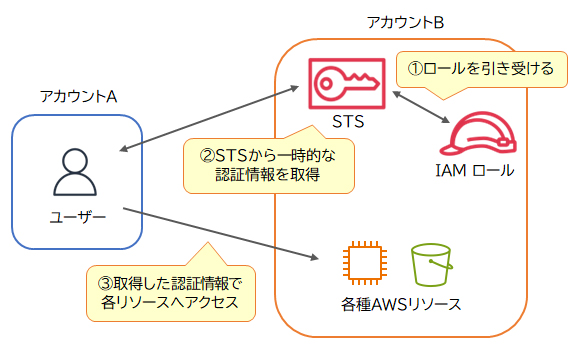

🎟 AWS Security Token Service（STS） SAA
AWS STS は、ユーザーやアプリケーションに対して、AWSリソースへアクセスするための一時的なセキュリティ認証情報を発行するサービスです。 認証情報には有効期限が設定され、期限が切れると自動的に無効化されます。
特徴とユースケース
⏱ 一時認証情報
有効期限付きの認証情報を発行。期限切れで自動無効化されるため、漏洩・不正利用のリスクを低減できる。
🔁 クロスアカウントアクセス
複数アカウント間でロールを引き受け（AssumeRole）してアクセスする場面で利用。
🔗 フェデレーション
オンプレミスのLDAP/AD や外部IdPの認証基盤を使ったAWSアクセスに利用。

🔶 試験のポイント（SAA 頻出）
- STS = 一時的な認証情報を発行。長期キーを配らずセキュアにアクセス
- IAMロールの引き受け（AssumeRole）、クロスアカウント、フェデレーションで利用
- Cognito のIDプールも内部的にSTSの一時認証情報を発行する